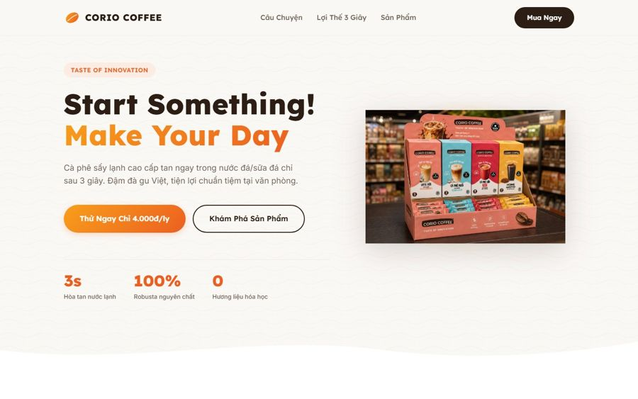

Dự án
Ảnh, video, thiết kế, và vài sản phẩm web & AI tự dựng — phần lớn cho bất động sản. Bấm vào ảnh để xem đủ bộ; thẻ có mũi tên ↗ mở trang thật.
Ny'ah — Nhã Đạt
2025 — nayHai dự án của Nhã Đạt mang thương hiệu Ny'ah: Ny'ah Phú Định — compound & shophouse 50 căn ở quận 8, và Villa Ny'ah — khu villa nghỉ dưỡng ven sông Cầu Tràm. Tôi phụ trách hình ảnh và nội dung cho cả hai: chụp kiến trúc, nội thất nhà mẫu; quay dựng video; thiết kế social post; triển khai sự kiện mở bán; quản lý kho ảnh — video; và tự viết công cụ để đội marketing chạy chiến dịch nhanh hơn.

Sản phẩm web & AI
Vibe code · 2025 — nayNhững thứ tôi tự dựng bằng cách "vibe code" cùng AI — xuất phát từ nhu cầu của người làm marketing bất động sản, không phải lập trình viên. Đều đang chạy thật cho công việc ở Nhã Đạt hoặc cho khách.

Trợ lý trả lời khách về Ny'ah Phú Định và Villa Ny'ah (giá, căn còn trống, pháp lý, đường đi thật qua Google Maps), tự bắt số điện thoại để lấy lead. Trong sales gallery, hệ thống nghe cuộc trò chuyện của sales và tự đổi slide trên màn hình theo nội dung đang nói; có giọng nói tiếng Việt và app điều khiển cho sales. Nhúng vào WordPress qua iframe.
Next.js · Gemini · RAG · Deepgram / Edge TTS · Bun + Elysia · WebSocket · GitHub: NhaDat-chatbot
Sàn tin bất động sản gom từ 5 nguồn: crawler tự chạy hằng ngày, AI chuẩn hóa và lọc trùng, rồi lên web có tìm kiếm theo vị trí — giá — diện tích, bản đồ, công cụ định giá và tính vay, lưu tin và báo qua email/Zalo, trang đăng tin cho môi giới. Khoảng 450 tin đang hoạt động.
Next.js 15 · TypeScript · Supabase · Playwright · Gemini · Leaflet · Vercel · GitHub: NhaDat-Radar

Landing page bán cà phê sấy lạnh cho một thương hiệu nhỏ: câu chuyện, sản phẩm, nút mua. HTML/CSS/JS thuần, deploy Vercel.
HTML · CSS · JavaScript · GitHub: Corio-coffee
Nhiếp ảnh
2017 — 2024Ảnh chụp trong thời gian làm việc cho Axel Münsson ở Đan Mạch, đi lại ở châu Âu, và ở nhà — Sài Gòn, Quảng Trị.
Thiết kế & mỹ thuật công nghiệp
2017 — 2024Bao bì, ấn phẩm in và sản phẩm POD cho Axel Münsson thuộc về khách hàng — gửi riêng khi cần xem.
Áo, poster in theo yêu cầu; nhãn và bao bì sản phẩm nông nghiệp.
Công cụ nhỏ tự viết
Python · JavaScriptScript và tool tôi viết để bỏ bớt việc lặp lại hằng ngày. Không phải sản phẩm — chỉ là thứ tôi dùng thật.
-
Finding-picturePython · image hashTìm và lọc ảnh trùng trong kho vài chục nghìn tệp — dùng để dọn kho ảnh chụp.GitHub
-
Lên lịch đăng bài FacebookPython · Selenium · Graph APILên lịch và đăng bài hàng loạt lên nhiều fanpage/group cho việc truyền thông dự án.Dùng nội bộ
-
Tạo video ngắn hàng loạtNode.js · FFmpegGhép ảnh, tiếng và phụ đề thành video ngắn (Reels, TikTok) từ kịch bản.Dùng nội bộ
-
Ứng dụng học ngôn ngữ ký hiệuFlutter · MediaPipeNhận dạng cử chỉ tay qua camera và chuyển thành chữ. Đang thử nghiệm.Prototype